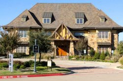

Welcome to Craig Ranch! THE premier Over 55 Retirement Community of North Texas!

The Retreat at Craig Ranch
McKinney, TX
Low $400s–High $400s
The Retreat at Craig Ranch is an active, non-age restricted community in McKinney, Texas. While open to home buyers of all ages, the lifestyle and age-targeted amenities appeal to active adults and retirees. Surrounded by plenty of green spaces, The Retreat is part of the unique, master-planned golf course community of Craig Ranch which was built around a town center to facilitate friendships. While residents of The Retreat have use of the world class 18-hole golf course, the trolley, and all of the venues at the town center, they also have their own designated clubhouse and pool.The two-story clubhouse is a spacious activity hub reserved exclusively for residents of The Retreat at Craig Ranch. Here, it's easy to partake in a daily fitness routine in the exercise room or gather with friends in the billiard room or social space. This exclusive clubhouse also offers a hobby room and catering kitchen. Outdoors, residents enjoy access to an outdoor pool and patio.